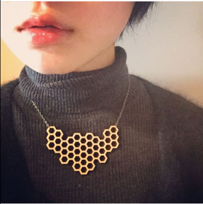

MIZUKI MATSUZAWA
satendとかのメディアにもよく取り上げられてるUNICE よく取り上げられてるだけあってめちゃいい！！！
店内が広くて十分なスペースが各テーブルにあって、雰囲気も落ち着く感じ
テーブルのサイズがPCいじりながらノート広げられるくらい大きい
あとフリーWifiが爆速で、頼めば店内入って右奥の席にあるコンセント貸してくれる。延長コード付きで３つまで刺せます
分煙されててきちんとスモーカー対策もしてあるみたい
ランチが1000円前後でランチライム5時までやってるし、ランチだとフリードリンクで１０種類くらいの飲み物が5時まで飲み放題
ルイボスティーあるのが個人的にツボ
１時くらいに来たけど、２割くらいしか席埋まってないし、子供/大学生がいないから民度保たれててまじ良い〜〜
カップルで勉強するのも友達と作業するのにも最適です
!!注意!!：5時30分にカフェとバーで切り替えるらしくて、5時30分に追い出されます。。。
Honey Cafe
16:25投稿
送信